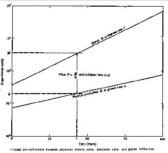

|
|
Search |
Published in:
At the time M. King Hubbert, was with the U.S. Geological Survey, Department Of The Interior.
- National Energy Conservation Policy Act of 1974, Hearings before the Subcommittee on the Environment of the committee on Interior and Insular Affairs House of Representatives. June 6, 1974.
Thanks to Robert Hickerson for discovering this article, and to John Taube for scanning it in.
My name is M. King Hubbert. I am a Research Geophysicist with the U.S. Geological Survey, but I wish to make it clear that I am testifying as an individual and I am not representing the views of the Geological Survey or of the Administration. My scientific education was received during the 1920's from the University of Chicago from which I have received the degrees B.S., M.S., and Ph.D. jointly in geology and physics with a minor in mathematics. One half of my professional career, beginning in 1926, has been in both operations and research with respect to the exploration and production of petroleum. The second half has been divided about equally between university teaching in geology, geophysics, and mineral and energy resources, and work with the Illinois and U.S. Geological Surveys. In the petroleum industry my work included geological and pioneer seismic explorations in Texas, New Mexico, and Oklahoma during 1926-1928 for the Amerada Petroleum Corporation, and in petroleum exploration and production research during l943-1963 for Shell Oil Company and Shell Development Company in Houston, Texas. Also, for about a decade of this latter period I was an Associate Director for Exploration and Production Research for Shell during which I helped to organize and staff a major research laboratory for petroleum exploration and production.
My university teaching comprised a decade during the 1930's in geology and geophysics at Columbia University; Professor of Geology and Geophysics (part time) from 1962-1968 at Stanford University; a Regents' Professorship during the Spring Quarter, 1973, at the University of California, Berkeley; and numerous shorter lectureships at various universities, including California Institute of Technology, Massachusetts Institute of Technology, Scripps Institution of Oceanography, and the University of California, Los Angeles.
My scientific and professional affiliations include membership in the National Academy of Sciences (elected in 1955); American Academy of Arts and Sciences (1956); Geological Society of America (former President; Day medal for geophysics; Penrose Medal for general geology); American Geophysical Union; American Association of Petroleum Geologists (Associate Editor; Honorary membership) Society of Exploration Geophysicists (former Editor; Honorary membership) American Institute of Mining, Metallurgical and Petroleum Engineers (Lucas Medal for petroleum engineering): and Canadian Society of Petroleum Geologists (Honorary membership).
Of particular pertinence to the present hearings on the rate of industrial growth has been a continuing study, begun in 1926, of mineral and energy resources and their significance in the evolution of the world's present technological civilization. Of the more than a dozen published papers resulting from this study, the following bear directly upon some of the concerns of the present hearings:
It is my understanding that the present hearings pertain primarily to the bill H.R. 11343, ``A bill to provide for the establishment of a comprehensive energy conservation program in order to regulate the national rate of growth of energy use, to establish a Council on Energy Policy, and for other purposes.'' In Sec. 7(a) of this bill it is stipulated that one of the duties of such a Council shall be ``to develop and transmit to the President and to the Congress ... a comprehensive report setting forth the proposed legislation it deems necessary to achieve a maximum rate of growth in energy consumption of 2 per centum per year'' [Italics added].
Instead of discussing the merits or demerits of this proposed legislation, I think that it may be more helpful if I discuss some of the aspects of growth in general in an effort to see the bearing which these relationships may have upon our evolving social system.
The earth and its biological inhabitants comprise an evolving system in which various of its components change in magnitude with time. To describe these changes we may use the term ``growth'' in a generic sense as being synonymous with change. Thus a given quantity may be said to exhibit positive growth if its magnitude increases with time, negative growth if it decreases with time, and zero growth if it remains constant.
Two terms applicable to an evolving system are of fundamental importance. These are steady (or stationary) state and transient state. A system is said to be in a steady state when its various components either do not change with time, or else vary cyclically with the repetitive cycles not changing with time. A system in a transient state is one whose various components are undergoing noncyclical changes in magnitude, either of increase or decrease.
In distinguishing these two states the time scale needs also to be taken into account. Actually, an ideal steady state on the earth is impossible. For example, a pendulum clock driven by a weight or a spring is an almost perfect example of a cyclical steady state, with one exception: the weight falls or the spring unwinds. This latter characteristic is a transient phenomenon. Similarly on the earth many quantities vary cyclically on a diurnal or annual scale and yet change very slowly over periods of thousands of years. However, even these quantities which approximate a steady state over intermediate periods of time become transient phenomena on a longer time scale. On a time scale of the solar system even the sun's radiation is a transient phenomenon due to the fact that the sun is slowly exhausting the supply of hydrogen upon which its radiation of energy depends.
The growth phenomena with which we are at present concerned are almost exclusively of the transient kind. Three types of transient growth are illustrated in Figure 1. This figure is drawn with a time base extending from the year 1800 to beyond 2100 during which some quantity is assumed to grow in one or the other of the three modes shown. The first of these growth modes, shown by Curve I is uniform exponential growth. In this curve the magnitude of the growing quantity is assumed to double every 20 years. The equation for this type of growth is
Q = QO eat (1)
where Q0 is the magnitude of the quantity at initial or zero time, Q its magnitude at time t, a the fraction by which the quantity increases per unit time, and e=2.718 is the base of natural logarithms.
This equation can also be expressed in terms of successive doublings by
Q = Q02t/T = Q02n (2)
where T is the doubling period and n=t/T is the number of times the quantity has doubled in the time t. The relation between the doubling period T and the growth rate a is obtained from equation (1) by transposing Q0 to the left side and noting that for Q=2Q0
Q/Q0 = 2 = eaT (3)
Then taking the natural logarithm of both sides, we obtain
ln2=aT
whereby,
a = ln2/T = 0.693/T (4)
or conversely,
T=0.693/a (5)
According to equation 4 a quantity which grows at such a rate as to double every 20 years would have a growth rate a per year of 0.0346, or 3.46 percent. By equation 5, a quantity which increases at a rate of 0.0693, or 6.93 percent per year would double every 10 years.
Another fundamental property of uniform exponential growth is the following. If the logarithm of the quantity is plotted graphically as a function of time, or if the quantity is plotted on semilogarithmic paper, the resulting graph will be a straight line whose slope is proportional to the growth rate. Conversely, a straight-line graph of the growth of a quantity, when plotted on semilogarithmic paper, indicates a uniform exponential growth.
A second type of growth is that shown in Curve II of Figure 1. Here the growing quantity increases exponentially for a while during its initial stage, after which the growth rate starts to slow down until the magnitude of the quantity finally levels off to some fixed maximum quantity. After this the growth rate becomes zero, and the quantity attains a steady state. Examples of this kind of growth are afforded by biological populations and by the development of water power in a given region. The population of any biologic species, if initially stationary, will respond to changed conditions in a manner indicated by Curve II, or conversely by its negative analog. That is, the population in response to a disturbance will either increase exponentially and then level off to a stable maximum, or else decrease negative-exponentially and finally stabilize at a lower level, or perish.
The development of water power in a given region behaves in a similar manner. The curve of installed capacity finally levels off and stabilizes at a maximum compatible with the potential water power afforded by the streams of the region.
A third type of transient growth is that represented by Curve III in Figure 1. Here, the quantity grows exponentially for a while. Then the growth rate diminishes until the quantity reaches one or more maxima, and then undergoes a negative-exponential decline back to zero. This is the type of growth curve that must be followed in the exploitation of any exhaustible resource such as coal or oil, or deposits of metallic ores.
By about 2 million years ago biological evolution had advanced to where the ancestors of the present human species had begun to walk upright and to use crude stone tools. At that stage this species must have existed as a member of an ecological complex and competed with the other members of the complex for a share of the local solar energy essential for its existence. The energy utilizable was almost exclusively the food supply derived by the biological system from solar energy by the mechanism of photosynthesis. During the subsequent million or more years the human species progressively devised means of capturing an ever larger supply of the available energy. This resulted in a slow change in the ecological relations and to an increase in density and geographical spread of the human population, but the energy per capita changed very little. In view of the slowness with which these developments must have occurred, the whole ecological system of which the human species was a member can only be regarded as comprising a slowly changing ecological steady state.
Although the pace quickened about 8,000 to 10,000 years ago with the domestication of plants and animals, a rapidly changing transient state of evolution was not possible until the large supplies of energy stored in the fossil fuels began to be utilized -when the mining of coal as a continuous enterprise was begun near Newcastle in northeast England about 9 centuries ago. This was followed as recently as 1857 in Romania and in 1859 in the United States by the exploitation of the second major source of fossil-fuel energy, petroleum.
In the case of coal mining, although scattered statistics are available during the earlier centuries, continuous annual statistics of world production are difficult to assemble earlier than 1860. In Figure 2 is plotted on an arithmetic scale the annual production of coal and lignite from 1860 to 1965, and the approximate rate back to 1800. In Figure 3 the same data are plotted on a semilogarithmic scale. What is most obvious from Figure 2 is the large contrast between the magnitudes of the rate of coal production following the year 1800, and that which must have prevailed during the preceding 7 centuries. From earlier statistics it can be estimated that the cumulative coal production during the eight hundred years before 1860 amounted altogether to only about 7 billion metric tons, whereas 133 billion metric tons, or 19 times as much coal, was mined during the 110-year period from 1860 to 1970. Also during the entire 9 centuries about 140 billion tons were mined; of this, somewhat more than half was produced during the 34-year period from 1940 to 1970.
In the semilogarithmic plotting of Figure 3, three separate periods of exponential growth in coal mining are shown. The first and principal phase extends from 1860 to World War I. During this period production increased at a rate of about 4.4 percent per year with a doubling period of 16 years. During the second period from World War I to World War II the growth rate dropped only 0.75 percent per year. Then following World War II, an intermediate rate of 3.6 percent per year ensued.
The corresponding growth of the world production of crude oil is shown in Figures 4 and 5. As the semilogarithmic graph of Figure 5 shows, during the first 20 years crude-oil production increased at a higher rate than later. After about 1880 the annual production settled down to a nearly uniform exponential growth, averaging about 6.94 percent per year with a doubling period of 10.0 years. By 1970 the cumulative production amounted to 233 × 109 barrels. Of this, one half has been produced since 1960.
Coal production in the United States is shown on a semilogarithmic graph in Figure 6. In this case, the uniform exponential-growth phase persist from 1850 to 1907, with an average growth rate of 6.6 percent per year and a doubling period of 10.5 years. The corresponding growth in the annual production of crude oil in the United States, exclusive of Alaska, is shown in Figure 7. As in the case of world production, the growth rate initially was somewhat higher than that later. After 1875 annual production increased at a uniform exponential rate of 8.3 percent per year with a doubling period of 8.4 years until the beginning of the Depression following 1929.
The relation between the curve of the complete cycle of exploitation (similar to Curve III in Figure I) and the cumulative production is shown in Figure 8. Mathematically, when the production rate as a function of time is plotted arithmetically, the area beneath the curve becomes it graphical measure of the cumulative production. For the complete cycle of production, the curve must begin at zero and, after reaching one or more maxima, it must decline to zero for whatever estimate must be made from geological or other information of the ultimate quantity, Q, to be produced, the complete-cycle curve must be drawn in such a manner that the subtended area does not exceed that corresponding to the estimate.
Utilizing this principle, curves for the complete cycles of coal production for the world and for the United States are shown in Figures 9 and 10. In each ease the upper curve corresponds to an estimate of recoverable coal made by Averitt of the U.S. Geological Survey. For the world Averitt estimated the initial quantity of recoverable coal assuming 50 percent recovery of coal in place, amounts to 7.6 × 1012 metric tons, and for the United States 1.5 × 1012 metric tons. These figures, however, include coal in beds as thin as 14 inches and to depths of 3000 feet or more. Since coal beds of such depths and thinness are not very practical sources for mining, actual minable coal may be considerably less than Averitt's maximum figures. This fact is indicated by the lower curves in each of Figures 9 and 10, based upon figures about half those by Averitt.
The significant fact about the complete-cycle curves of coal production in Figures 9 and 10 is that if only 2 or 3 more doublings occur in the rates of production, the peak production rates will probably occur not later than about 150 years from now. Another significant quantity displayed by these curves is the time required to produce the middle 80 percent of the ultimate cumulative production. To produce the first 10 percent of the world's ultimate amount of coal will require the 1000 year period to about the year 2000. The last 10 percent may require another 1000 years during the declining stage. The time required to produce the middle 80 percent will probably not be longer than about 3 centuries extending roughly from the year 2000 to 2300. If the peak rate should be higher, or the quantity to be produced less than are shown in Figure 9, this period could be shortened to possibly 2 centuries or less.
Complete cycles for crude-oil production in the United States and in the world, respectively, are shown in Figures 11 and 12. For the United States, exclusive of Alaska, several lines of evidence reviewed in detail in the papers cited heretofore indicate that the ultimate quantity, Q, of crude oil to be produced will be about 170 billion barrels. The complete-cycle curve is based on that figure. For the world, the two curves shown in Figure 12 are based on a low estimate of 1350 and a high estimate of 2100 billion barrels.
What is most strikingly shown by these complete-cycle curves is the brevity of the period during which petroleum can serve as a major source of energy. The peak in the production rate for the United States has already occurred three years ago in 1970. The peak in the production rate for the world based upon the high estimate of 2100 billion barrels, will occur about the year 2000. For the United States, the time required to produce the middle 80 percent of the 170 billion barrels will be approximately the 67-year period from about 1932-1999. For the world, the period required to produce the middle 80 percent of the estimated 2100 billion barrels will be about 64 years from 1968 to 2032. Hence, a child born in the mid-1930s if he lives a normal life expectancy, will see the United States consume most of its oil during his lifetime. Similarly, a child born within the last 5 years will see the world consume most of its oil during his lifetime.
A better appreciation of the epoch of the fossil fuels in human history can be obtained if the complete production cycle for all the fossil fuels combined -- coal, oil, natural gas, tar sands, and oil shales--is plotted on a time span of human history extending from 5000 years in the past to 5000 years in the future, a period well within the prospective span of human history. Such a plotting is shown in Figure 13. This Washington Monument-like spike, with a middle 80-percent span of about three centuries, represents the entire epoch. On such a time scale, it is seen that the epoch of the fossil fuel can be but an ephemeral and transitory event-an event, nonetheless, that has exercised the most drastic influence so far experienced by the human species during Its entire biological existence.
It is not the object of the present discussion to review the world's energy resources. Therefore, let us state summarily that of the other sources of energy of a magnitude suitable for large-scale industrial uses, water power, tidal power, and geothermal power are very useful in special cases but do not have a sufficient magnitude to supplant the fossil fuels. Nuclear power based on fission is potentially larger than the fossil fuels, but it also represents the most hazardous industrial operation in terms of potential catastrophic effects that has ever been undertaken in human history.
For a source of energy of even larger magnitude and without the hazardous characteristics of nuclear power, we are left with solar radiation. In magnitude, the solar radiation reaching the earth's surface amounts to about 120,000 × 1012 watts, which is equivalent, thermally, to the energy inputs to 40 million 1000-megawatt power plants. Suffice it to say that only now has serious technological attention begun to be directed to this potential source of industrial power. However, utilizing principally technology already in existence there is promise that eventually solar energy alone could easily supply all of the power requirements for the world's human population.
Returning now to the problem of sustained growth, it would appear that with an adequate development of solar power it should be possible to continue the rates of growth of the last century for a considerable time into the future. However, with regard to this optimistic view attention needs to be directed to other constraints than the magnitude of the energy supply. These constraints may be broadly classified as being ecological in nature. For more than a century it has been known in biology that if any biological species from microbes to elephants is given a favorable environment, its population will begin to increase at an exponential rate. However, it was also soon established that such a growth rate cannot long continue before retarding influences set in. These are commonly of the nature of crowding, pollution, food supply, and in an open system by adjustments with respect to other members of the ecological complex.
In our earlier review of the rates of production of the fossil fuels it was observed that for close to a century in each case the production increased exponentially with doubling periods within the range of 8 to 16 years. The same type of growth rates are characteristic of most other industrial components. Figure 14 is a graph showing the exponential growth of the world electric generating capacity. The solid part of the curve since 1955 shows a growth rate of 8.0 percent per year with a doubling period of 8.7 years. The dashed part of the curve shows approximately the growth since 1900. In the United States during the last several decades electric power capacity has been doubling about every 10 years. The world population of automobiles and also passenger miles of scheduled air flights are each also doubling about every 10 years.
In Figure 15 a graph is shown of the growth of the world's human population from the year 1000 A.D. to the present, and an approximate projection to the year 2000. This is important in that it shows the ecological disturbance of the human population produced by the development of technology based upon the fossil fuels, the concomitant developments in biological and medical science, and expansion into the sparsely settled areas of the newly discovered geographical territories. Note the very slow rate of growth in the human population during the 500 year period from the year 1000 A.D. to 1500, and then the accelerated growth that has occurred subsequently. Were it possible to plot this curve backward in time for a million years, the curve would be barely above zero for that entire period. The flare up that has occurred since the year 15M is a unique event in human biological history.
It is also informative to contrast the present growth rate of the human population with the average that must have prevailed during the past. The present world population is about 3.9 billion which is increasing at a rate of about 2 percent per year, with a doubling period of about 35 years. What could have been the minimum average doubling period during the last million years? This minimum would occur if we make a wholly unrealistic assumption, namely that the population a million years ago was the biological minimum of 2. How many doublings of this original couple would be required to reach the world's present population of 3.9 billion? Slightly less than 31. Hence, the maximum number of times the population could have doubled during the last million years would have been 31. The minimum value of the average period of doubling must accordingly have been 1,000,000/31, or 32,000 years.
To be sure the population need not have grown smoothly. Fluctuations no doubt must have occurred due to plagues, climatic changes, and wars, but there is no gainsaying the conclusion that the rate of growth until recently must have been so extremely slow that we may regard the human population during most of its history as approximating an ecological steady state.
The same kind of reasoning may be applied to the other components of any ecological system. It is known from geological evidence that organic species commonly persist for millions of years. Consequently, when we compute a maximum average growth rate between two finite levels of population at a time interval of a million years, we arrive at the same conclusion, namely that the normal state that is the state that persists most of the time is one of an approximate steady state. The abnormal state of an ecological system is a rapidly changing transient or disturbed state. Figure 16 illustrates the behavior of the populations of three separate species of an ecological complex during a transient disturbance between two steady states. In such a disturbance all populations are effected, some favorably, some unfavorably.
To obtain an idea of how long a disturbed or transient state can persist, a fundamental question that may be asked is: About how many doublings of any biological or industrial component can the earth itself tolerate? A clue to this may be obtained if we consider the problem of the grains of wheat and the chessboard. According to an ancient story from India, a king wished to reward one of his subjects for some meritorious deed. The man replied that his needs were few and he would be satisfied to receive a bit of wheat. If 1 grain were placed on the first square of a chessboard, 2 on the second, 4 on the third, and the number of grains were doubled for each successive square, he would be content to receive this amount of grain. The king ordered the board to be brought in and the wheat counted out. To his consternation he found that there was not enough wheat in the kingdom. Recently I obtained some wheat, measured a small volume, counted the grains, and did some arithmetic to find out how much wheat really was involved. The results were the following: On the nth square of the board the number of grains would be 2n-1; for the 64th and last square the number of grains would be 263; and for the whole board the total number of grains would be twice that for the last square or 264 grains. This amount of wheat, it turned out, would be 2000 times the world's present annual wheat crop.
While this may appear to be a trivial problem, its implications are actually profound. The Earth itself cannot tolerate the doubling of 1 grain of wheat 64 times.
The same principles and the same kinds of constraints apply when we are dealing with successive doublings of any other biological or industrial component. Even if there were no shortages of energy or of materials the earth will not tolerate more than a few tens of doublings. For example, as was remarked earlier, the world population of automobiles is doubling about every 10 years. Suppose we substitute automobiles for wheat grains in the chessboard problem. Take one American-size automobile and double it 64 times. Then stack the resultant number of cars uniformly over all the land areas of the earth. How deep a layer would be formed? One thousand miles deep.
Without further elaboration, It is demonstrable that the exponential phase of the industrial growth which has dominated human activities during the last couple of centuries is drawing to a close. Some biological and industrial components must follow paths such as Curve II in Figure 1 and level off to a steady state; others must follow Curve III and decline ultimately to zero. But it is physically and biologically impossible for any material or energy component to follow the exponential growth phase of Curve I for more than a few tens of doublings, and most of those possible doublings have occurred already.
Yet, during the last two centuries of unbroken industrial growth we have evolved what amounts to an exponential-growth culture. Our institutions, our legal system, our financial system, and our most cherished folkways and beliefs are all based upon the premise of continuing growth. Since physical and biological constraints make it impossible to continue such rates of growth indefinitely, it is inevitable that with the slowing down in the rates of physical growth cultural adjustments must be made.
One example of such a cultural difficulty is afforded by the fundamental difference between the properties of money and those of matter and energy upon which the operation of the physical world depends. Money, being a system of accounting, is, in effect, paper and so is not constrained by the laws within which material and energy systems must operate. In fact money grows exponentially by the rule of compound interest. If M0 be a national monetary stock at an initial time, and ithe mean value of the interest rate, then at a later time t the sum of money Mo will have grown exponentially to a larger sum M given by the equation
M=M0eit. (6)
Next consider the rate of physical production. Let Q be the generalized output of the industrial system at the initial time, and a be the rate of industrial growth. The industrial production at time t will then be given by
Q=Q0eat. (7)
At any given time the ratio of a sum of money to what the money will buy is a generalized price level, P. Hence
P=M/Q (8)
which, when substituted into equations 6 and 7, gives
P=M/Q = M0eit / Q0eat = (M0/Q0) e(a-i)t
However, M0/Q0 = P0, the price level at the initial time. Therefore,
P = P0e(a-i)t
which states that the generalized price level should increase exponentially at a rate equal to the difference between the rate of growth of money and that of industrial production. In particular, if the industrial growth rate a and the average interest rate i have the same values, then the ratio of money to what money will buy will remain constant and a stable price level should prevail. Suppose, however, that for physical reasons the industrial growth rate a declines but the interest rate i holds steady. We should then have a situation where i is greater than a with the corresponding price inflation at the rate (i-a). Finally, consider a physical growth rate a=0, with the interest rate i greater than zero. In this case, the rate of price inflation should be the same as the average interest rate. Conversely, if prices are to remain stable at reduced rates of industrial growth this would require that the average interest rate should be reduced by the same amount. Finally, the maintenance of a constant price level in a nongrowing industrial system implies either an interest rate of zero or continuous inflation.
As a check on the validity of these deductions, consider the curves of U.S. energy and pig-iron production shown in Figures 17 and 18. Because energy is a common factor in all industrial operation and pig-iron production one of the basic components of heavy industry, the growth in the production of energy and pig Iron is a very good indicator of the total industrial production.
Figure 17 Is a graph plotted on a semilogarithmic scale of the production of energy from coal, oil, gas, and water power and a small amount of nuclear power from 1850 to 1969. From 1850 to 1907 the production of energy increased exponentially at a rate of 6.91 percent per year, with a doubling period of 10.0 years. Then during the three-year period from 1907 to 1910, the growth rate dropped abruptly to a mean rate of 1.77 percent per year and the doubling period increased to 39 years.
Figure 17 is a corresponding plot of U.S. pig-iron production. The pig-iron curve resembles that of energy so closely 'that the two curves can hardly be told from one another. Pig-iron production also grew exponentially at a rate close to 7 percent per year until about 1910, when it too broke abruptly to a lower rate of less than 2 percent per year. This abrupt break at about 1910 represents a major event in the industrial history of the United States, yet we have barely been aware that it happened.
In parallel with this industrial growth during most of the 19th century and continuing until 1929, the mean monetary interest rate was also about 7 percent per year. Therefore until 1910 the price level, except for temporary disturbances, should have remained comparatively stable. Following 1910, when the physical growth rate dropped to about 2 percent per year, whereas the interest rate remained at about 7 percent, a price inflation at a rate of about 5 percent per year should have begun. Despite fluctuations, the interest rate has remained consistently higher than the physical growth rate from 1910 to the present, which implies that we should have had an almost continuous price inflation for the last 64 years.

A graphical illustration of the relations between the monetary growth, physical growth, and price inflation is shown In Figure 19. The upper straight line represents the exponential growth of money at the interest rate i; the lower curve the physical growth at the lower rate a. The ratio of M to Q at any given time is proportional to the distance between those two curves. If the curves are parallel, the spacing is constant and a stable price level will prevail. If the curves are divergent to the right, the price level will increase at the rate (i-a).
These curves depict the approximate relation between the monetary growth rate and the physical growth rate that has prevailed in the United States since 1910.
Finally, as confirmatory evidence, there is shown in Figure 20 a graph of the consumer price index as computed for each year from 1800 to 1971 by the U.S. Bureau of Labor Statistics. The three principal distortions coincide with the War of 1812, the Civil War, and World War I. Disregarding these, and drawing a smooth curve under the bases of each gives a very informative result. For the period from 1800 to 1910 the consumer price level remained remarkably stable. Beginning about 1910, at the time of the abrupt drop in the rate of industrial growth, prices began to inflate and they have continued to do so to the present time.
The foregoing example has been discussed in detail because it serves as a case history of the type of cultural difficulties which may be anticipated during the transition period from a phase of exponential growth to a stable state. Since the tenets of our exponential-growth culture (such as a nonzero interest rate) are incompatible with a state of nongrowth, it is understandable that extraordinary efforts will be made to avoid a cessation of growth. Inexorable, however, physical and biological constraints must eventually prevail and appropriate cultural adjustments will have to be made.
Mr. UDALL. Thank you, sir.
We will try to take about 3 minutes for each member who wants to ask questions.
I have two quick ones. First is a comment, or it may be a question.
It is interesting to me that you distinguished physical scientists have arrived at the same conclusion, sort of, that Dr. Heilbroner, an economist, has arrived at. And that is that this inflation that we are all so concerned about now may not necessarily be mismanagement of the economy or some temporary problems necessarily, but maybe built into this whole problem of exponential growth in terms of the population and use of resources, and so on.
Is that what you are saying?
Dr. HUBBERT. It has been going on, the record is unequivocal, since 1910, disregarding the disturbance of World War I.
Mr. UDALL. My second question is, as one has been right when others were wrong in terms of the availability of petroleum, I understand from your statement here and other information that we peaked in U.S. oil production about 3 or 4 years ago, 1970 or 1971.
Dr. HUBBERT. 1970.
Mr. UDALL. Do you foresee, even with the best scenario, the most optimistic luck offshore, turning to oil shale, these kinds of things, do you think we will ever again exceed the rate of production, domestic production of oil from all sources that we had in 1970?
Dr. HUBBERT. I doubt it. The argument is made, wait until Alaska comes on stream, and all that. More than likely that will merely slow down the rate of decline. The amounts of oil that are postulated to be discovered off the Atlantic seaboard I am very, very dubious about. And so my best guess is, on the basis of the information at hand, that the peak of 1970 is the all time peak. And the other things that we would do would be merely to slowdown the rate of decline rather than to reverse it. I won't say it is impossible to reverse it, but I am very dubious that we can.
Mr. UDALL. The likelihood is that we will not.
Dr. HUBBERT. My guess is that it will not happen.
Mr. UDALL. I notice the figures that oil production in the United States last year was less than it was the year before, and that this trend, if it continues, would mean that by the time we get to the full 2 million barrels a day from Alaska, we will have lost 2 million in production from other U.S. sources.
Dr. HUBBERT. That is my best guess on the matter.
Mr. UDALL. Mr. Martin?
Mr. MARTIN. Thank you, Mr. Chairman.
Mr. Hubbert, this is a very important fundamental analysis of what has happened to cause changes in our growth rate.
I notice that one conclusion that you show in many of these graphs is the change in the rate of growth in production of both energy and minerals in about 1910. Then it seems to me you are saying as a necessary consequence of that is the increased rise in the cost of living and inflation since about 1910 also.
Is that reading you correctly?
Dr. HUBBERT. I am principally saying -- in the first place that the break of 1910 is, I think, a major event in American history, and we didn't even know it happened. We have been coasting along under the illusion that we had far more growth since 1910 than we had actually had. If you want to go back to the decade of the 1920's, that was regarded during the time as a period of a great boom. Well, actually industrially, although the industrial production in 1929 was the highest up until that date, it was still about 30 percent less than where it would have been if that break hadn't occurred in 1910.
So that the decade of the 1920's was a boom period on paper, not industrially. Industrially it was a slowing down period.
Mr. MARTIN. When you compare it on the logarithmic scale and show these different slopes?
Dr. HUBBERT. Yes, Sir.
Mr. MARTIN. I have no further questions, Mr. Chairman.
Mr. UDALL. Mr. Roncalio?
Mr. RONCALIO. I have deeply enjoyed this. I don't think I have grasped it all.
Will you state again, what happened in 1910?
Dr. HUBBERT. The growth of total energy, industrial energy of the United States, from coal, oil, gas, waterpower, plotted on semilogarithmic paper will plot a straight line if you have uniform exponential growth. That straight line continued until the period of about a 3-year interval, 1907 to 1910, and then it broke away to a lower line of less than 2 percent a year. The growth rate up until that time was about 7 percent, a year.
I have another curve showing the same thing in pig iron. Pig iron is the foundation of heavy industry in the United States other than energy. The same growth rate approximately occurred to 1910, and the same break occurred to less than 2 percent.
Mr. RONCALIO. That is on your figure 1?
Dr. HUBBERT. No, it is toward the end over there.
Mr. RONCALIO. Figure 17.
Dr. HUBBERT. Yes.
Mr. RONCALIO. Thank you very much. I would like to hear more some day.
Mr. UDALL. I think this has been a very useful hearing this morning. I thank you all who participated.
I thank you particularly, Dr. Hubbert.
The subcommittee will stand adjourned until Thursday at the regular time.
[Whereupon, at 12:07 p.m., the subcommittee adjourned, to reconvene at 9:45 a.m., Thursday, June 6, 1974.]